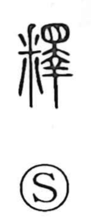

釈

Kun: toku, suteru, yurusu | On: shaku, seki
to explain ・ to interpret ・ to untie ・ to solve ・ to discard ・ to pardon
Explanation
Originally written 釋, the character combines 釆, the claws of an animal, with 睪, a figure of a dead body marked by an eye above, within which 幸 sketches the splayed limbs. It thus depicts a carcass being torn apart and scattered by claws. In contrast to 解, which shows cutting off an ox’s horns with a knife, 釈 expresses the subsequent dispersal and rending; taken together they give 解釈, the act of breaking things down so their meaning becomes clear. From this image the sense broadened to untying or loosening what is hard or tangled, and the graph also came to be used for ‘to discard’ (in place of 舎) and ‘to remit’ (in place of 赦).